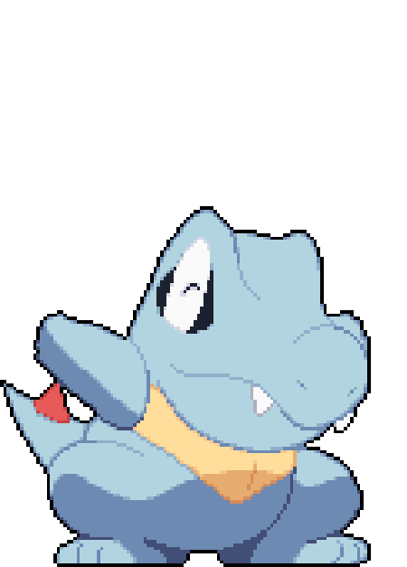

Vedant Malkar
wassup! i'm a 19 year old currently in college, exploring robotics and low-level embedded, having fun building and messing about.

most of my time goes into hardware side projects and reading about how operating systems actually work under the hood. i had a lot of fun contributing to Zephyr upstream, and somewhere in the middle of it got inspired to write my own RTOS from scratch, which turned into AstraRTOS. i also tinker with UWBs and a bit of ROS on the side. i like reading, figuring things out, and writing about what i learn.
currently
- writing a small RTOS kernel from scratch in C
- UWB-based indoor localization on Zephyr
- learning bare metal C and Cortex-M internals
Projects
- 2026 AstraRTOS A minimal real-time operating system kernel written from scratch in C.
- 2026 UWB TDOA on Zephyr Custom Zephyr firmware for Qorvo's DW3001CDK implementing TDOA ranging for indoor localization.
- 2025 Ballerina Cappucina Omnidirectional robot that detects and collects coloured balls around a room. ROS, OpenCV, ESP32.
- 2025 VisiLoc Camera-based indoor localization using ArUco markers. Estimates position and orientation without GPS.
Writings
- loading…